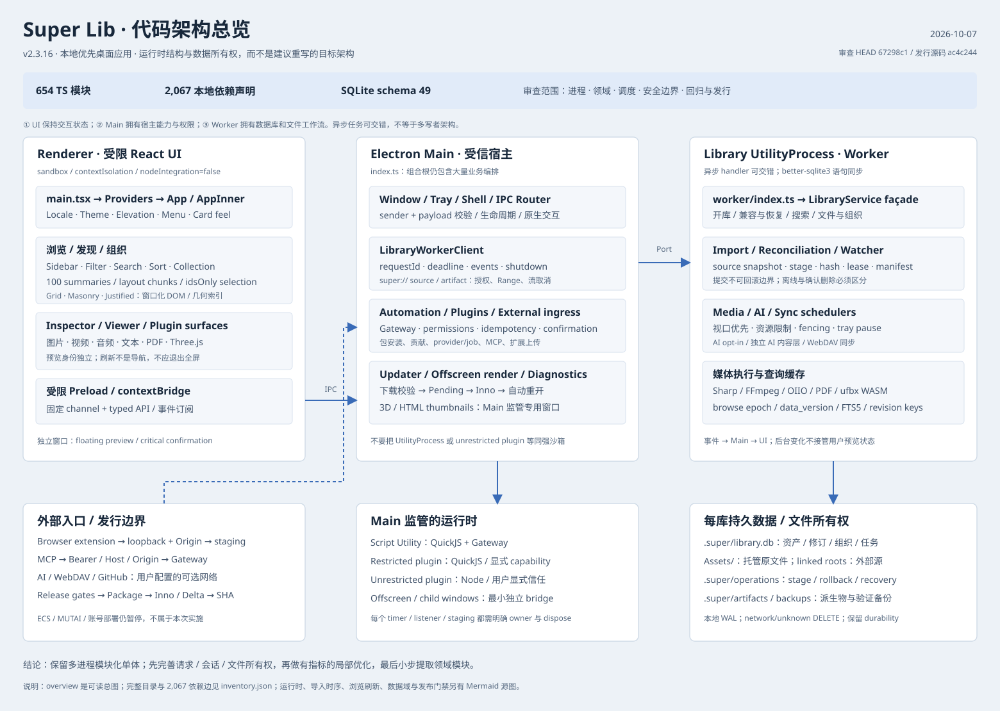

Super Lib · 架构审查与优化计划
保留当前良好体验，先修所有权边界，再做有证据的优化。

推荐优先顺序
- 补确定性回归、默认门禁与当前版附件清单。
- 修导入清理、插件下载预算、分页/多选会话、领域事件及资源清理。
- 测量后做日志尾读、scope SQL、可重算缓存与几何定位优化。
- 保 façade / typed IPC / schema49，逐切片提取模块，不全量重写。
详细结构源图
Mermaid源图需支持Mermaid的编辑器；当前总览可完全离线查看，不加载CDN或外部脚本。